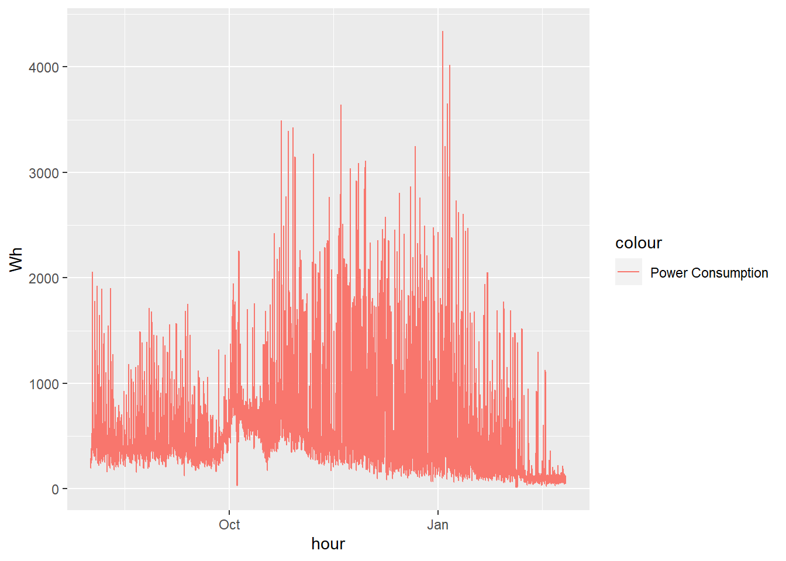
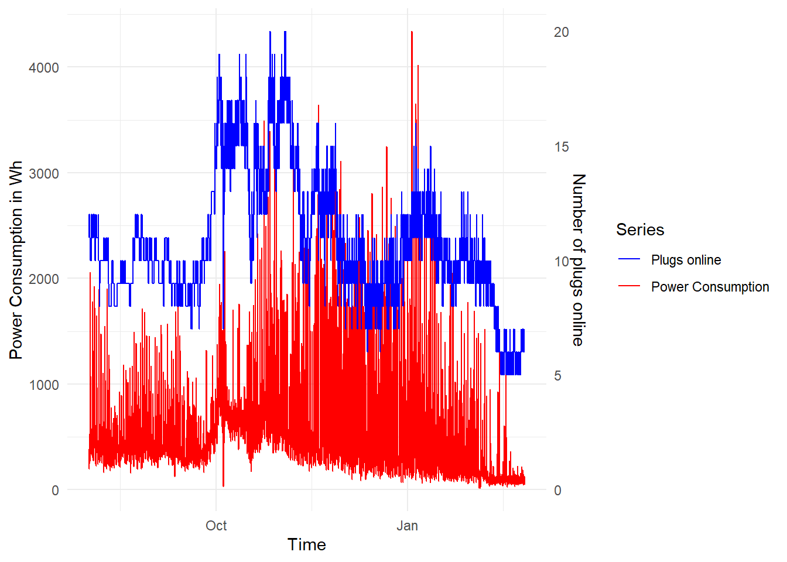
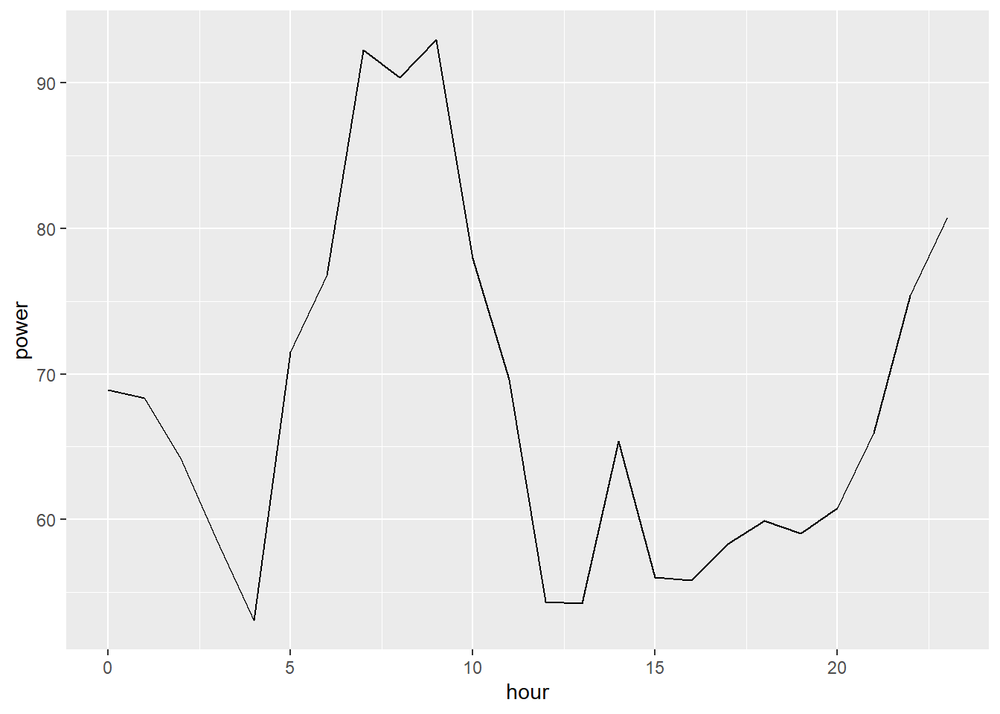
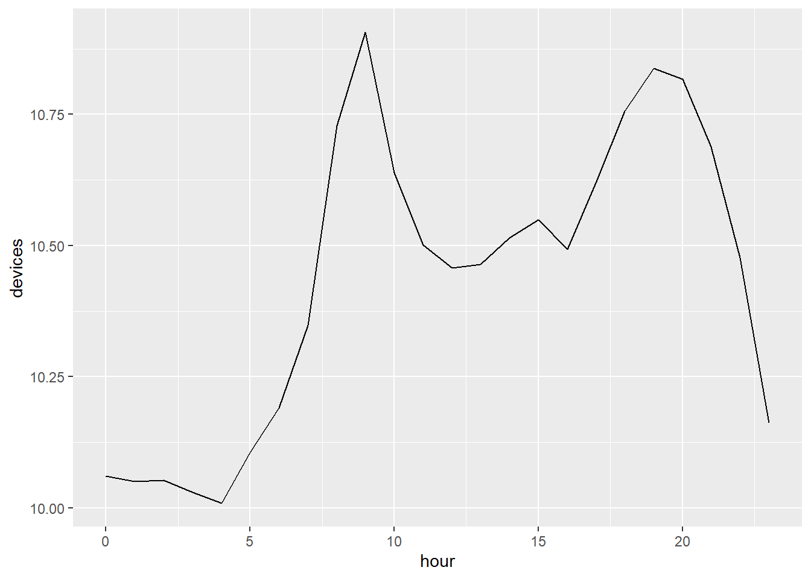
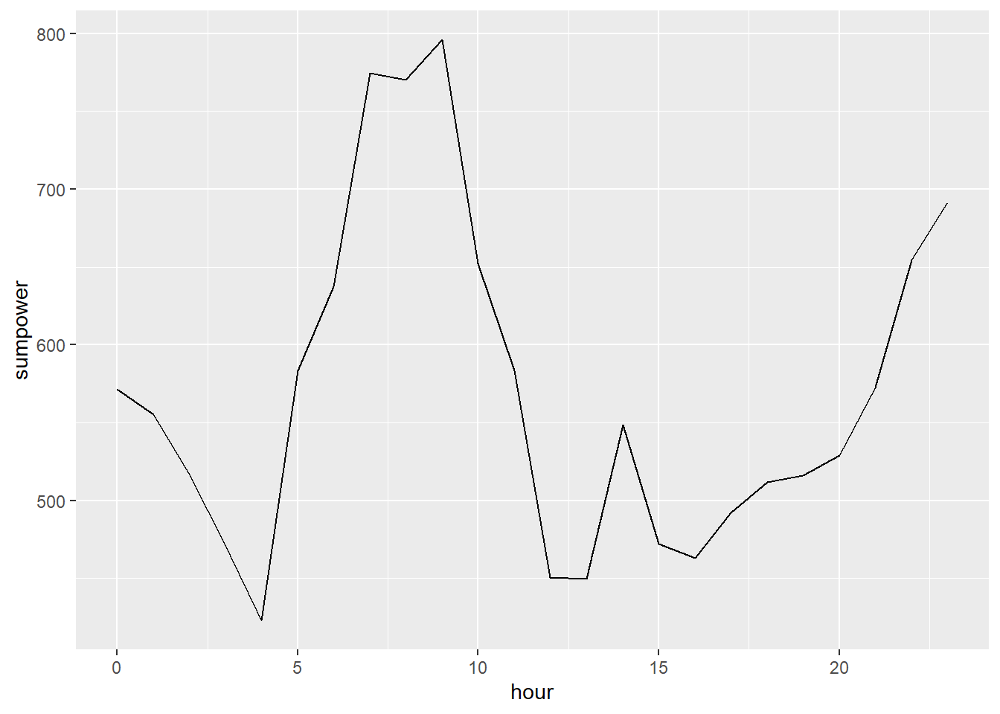
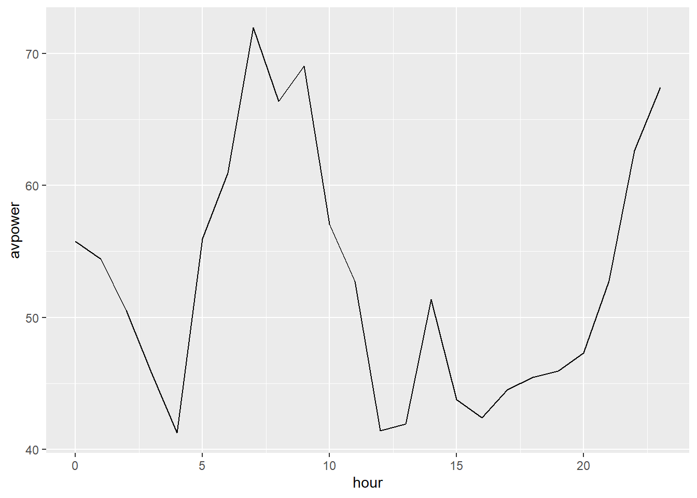

Powbal India - Spring 23 Dashboard
Last update 2023-02-28 23:37:31
This page provides basic statistics and information on the POWBAL PAUSE Demand Pilot in India.
Registered users over time
In total we have 75 who registered with the POWBAL app since summer 2022. 38 also succesfully configured a plug that came online at some point.

Distribution of Power consumption
Most participating household connect fairly power hungry devices to the plugs at least some of the time. The Figure below shows the distribution of maximum power connected across plugs. This average at 1125 Watt. Note that the distribution is bimodal. There is a concentration of users at below 1kWh. However, there is also a fairly big mass above 2kWh. Users in that range must have connected a fairly substantial air-conditioning unit or similar.
Mean power consumption is naturally much lower and highly concentrated near 0.

Basic time series
A bird’s eye view on the whole pilot trial…..
#total=energy %>% filter(power<100)
#total=energyall %>% mutate(power=ifelse(is.na(power),0,power))
total=energyx %>% mutate(power=ifelse(is.na(power),0,power)) #%>%
#filter(timestamp>start)
summary(total$power) Min. 1st Qu. Median Mean 3rd Qu. Max.
0.00 0.00 0.00 54.65 68.30 2968.60 total$hour=round_date(ymd_hms(total$timestamp),"hours")
total <- total %>%
dplyr::group_by(hour,device_id) %>%
dplyr::mutate(nn = 1:n())
total=mutate(total, plugs=nn==1)
#total=total %>% mutate(power=ifelse(is.na(power),0,power))
total=total %>% dplyr::group_by( hour) %>% dplyr::summarise(Wh = sum(power*5/60) , count=sum(plugs) )
max(total$hour)[1] "2023-02-26 09:00:00 UTC" total=total%>%filter(as_datetime(hour)>as_datetime("2022-01-01"))
#total=total%>%filter(as_datetime(hour)<=as_datetime(timepoint))
total_old=total
#total=total[total$count<500,]
library(ggplot2)
p <- ggplot(total, aes(x = hour))
p <- p + geom_line(aes(y = Wh, colour = "Power Consumption"))
p
# adding the relative humidity data, transformed to match roughly the range of the temperature
scaler=max(total$Wh)/max(total$count)
p <- p + geom_line(aes(y = count*scaler, colour = "Plugs online"))
# now adding the secondary axis, following the example in the help file ?scale_y_continuous
# and, very important, reverting the above transformation
p <- p + scale_y_continuous(sec.axis = sec_axis(~./scaler, name = "Number of plugs online"))
# modifying colours and theme options
p <- p + scale_colour_manual(values = c("blue", "red"))
p <- p + labs(y = "Power Consumption in Wh",
x = "Time",
colour = "Series")
p <- p + theme(legend.position = c(0.8, 0.9))+theme_minimal()
p
#filename=paste0("OneDrive - Imperial College London/powbal/data/lotterydata/consumption",dd,".png")
#ggsave(filename, plot = last_plot(), device = NULL, path = NULL,
# scale = 1, width = 15, height = 15, units = c("cm"),
# dpi = 300, limitsize = FALSE)
#filename=paste0("C:/Users/rmartin/Dropbox/POWBAL/WWW/consumption","latest",".png")
#ggsave(filename, plot = last_plot(), device = NULL, path = NULL,
# scale = 1, width = 30, height = 9, units = c("cm"),
# dpi = 700, limitsize = FALSE)Hours of the day
library(fixest)
#grep("Calcutta", OlsonNames(), value=TRUE)
energyx=energyx %>%
mutate(indiatime=with_tz(timestamp, tzone = "Asia/Calcutta")) %>%
mutate(hour=hour(indiatime))
r1 = feols(power~0+factor(hour),energyx)NOTE: 123,287 observations removed because of NA values (LHS: 123,287).r1 %>% summary()OLS estimation, Dep. Var.: power
Observations: 503,731
Standard-errors: IID
Estimate Std. Error t value Pr(>|t|)
factor(hour)0 68.9175 1.53626 44.8605 < 2.2e-16 ***
factor(hour)1 68.3236 1.54830 44.1283 < 2.2e-16 ***
factor(hour)2 64.1387 1.55550 41.2335 < 2.2e-16 ***
factor(hour)3 58.5003 1.55639 37.5872 < 2.2e-16 ***
factor(hour)4 53.0467 1.56480 33.9000 < 2.2e-16 ***
factor(hour)5 71.5026 1.54352 46.3243 < 2.2e-16 ***
factor(hour)6 76.7461 1.52951 50.1771 < 2.2e-16 ***
factor(hour)7 92.2445 1.52006 60.6848 < 2.2e-16 ***
factor(hour)8 90.3829 1.50867 59.9091 < 2.2e-16 ***
factor(hour)9 92.9539 1.50502 61.7626 < 2.2e-16 ***
factor(hour)10 77.9377 1.52298 51.1744 < 2.2e-16 ***
factor(hour)11 69.6403 1.52082 45.7914 < 2.2e-16 ***
factor(hour)12 54.3269 1.52980 35.5124 < 2.2e-16 ***
factor(hour)13 54.2245 1.52837 35.4786 < 2.2e-16 ***
factor(hour)14 65.3703 1.52146 42.9654 < 2.2e-16 ***
factor(hour)15 56.0076 1.51988 36.8501 < 2.2e-16 ***
factor(hour)16 55.8301 1.53634 36.3397 < 2.2e-16 ***
factor(hour)17 58.3470 1.52269 38.3183 < 2.2e-16 ***
factor(hour)18 59.9236 1.51334 39.5971 < 2.2e-16 ***
factor(hour)19 59.0487 1.49739 39.4344 < 2.2e-16 ***
factor(hour)20 60.7547 1.49977 40.5093 < 2.2e-16 ***
factor(hour)21 65.9492 1.50230 43.8987 < 2.2e-16 ***
factor(hour)22 75.3760 1.50095 50.2189 < 2.2e-16 ***
factor(hour)23 80.7608 1.51142 53.4337 < 2.2e-16 ***
---
Signif. codes: 0 '***' 0.001 '**' 0.01 '*' 0.05 '.' 0.1 ' ' 1
RMSE: 220.9 Adj. R2: 0.002883ids=energyx %>% select(device_id) %>% distinct()Adding missing grouping variables: `timestamp`power_by_hour=energyx %>%
group_by(hour) %>%
summarise(power=mean(power,na.rm=T)) %>% inner_join(
energyx %>% group_by(timestamp,hour) %>%
summarize(devices=n(),sumpower=sum(power,na.rm=T)) %>%
mutate(avpower=sumpower/devices) %>%
group_by(hour) %>%
summarise(devices=mean(devices),sumpower=mean(sumpower),avpower=mean(avpower))
)`summarise()` has grouped output by 'timestamp'. You can override using the
`.groups` argument.
Joining, by = "hour"test=energyx %>% filter(is.na(hour))
power_by_hour %>% ggplot(aes(x=hour,y=power)) +geom_line()
power_by_hour %>% ggplot(aes(x=hour,y=devices)) +geom_line()
power_by_hour %>% ggplot(aes(x=hour,y=sumpower)) +geom_line()
power_by_hour %>% ggplot(aes(x=hour,y=avpower)) +geom_line()